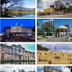

La capital

San José, capital de Costa Rica, se ubica en la región del Valle Central con la Cordillera de Talamanca al sur y volcanes al norte. La ciudad se distingue por sus edificios coloniales españoles, como el decorado Teatro Nacional de Costa Rica, de estilo neoclásico, que observa desde lo alto la Plaza de la Cultura, un punto de encuentro popular. Debajo de la plaza, el Museo del Oro Precolombino exhibe cientos de artefactos relucientes.